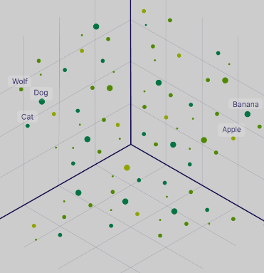
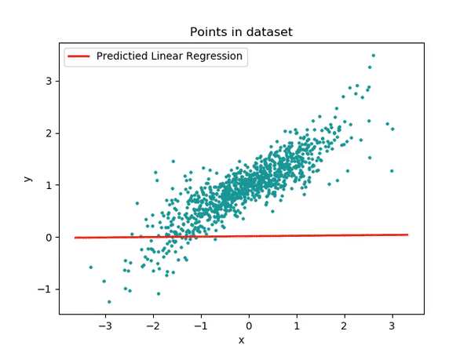
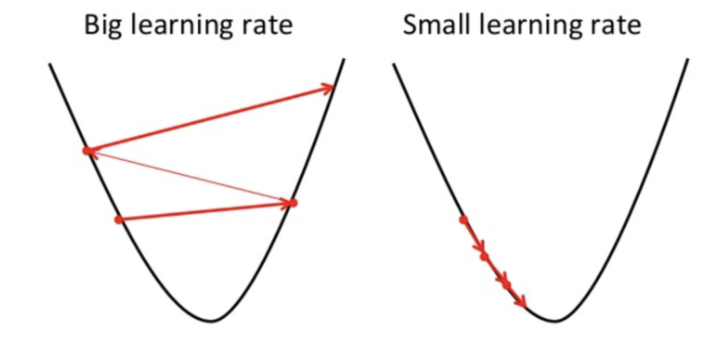

Teoria y conceptos basicos de inteligencia artificial generativa
Las redes neuronales requieren un input para generar un output. Ese input debe tener un formato numerico para poder funcionar.
- Como logramos representar palabras, imagenes o sonidos como numeros?

Usando una transformacion vectorial. La mas frecuente es la generacion de embeddings.
Word Embedding es una técnica en el Procesamiento del Lenguaje Natural (NLP) que representa palabras como vectores numéricos en un espacio de alta dimensionalidad. En lugar de tratar las palabras como símbolos discretos (como lo haría un diccionario), Word Embedding captura las relaciones semánticas y sintácticas entre las palabras, permitiendo que las computadoras comprendan mejor el significado del lenguaje.
- Como funciona?
La idea principal es que las palabras que se usan en contextos similares tienden a tener significados similares. Word Embedding aprende estas relaciones observando grandes cantidades de texto y ajustando las posiciones de los vectores de las palabras en el espacio vectorial.
Entrenamiento: Se entrena un modelo (por ejemplo, Word2Vec, GloVe, FastText) con un corpus de texto muy grande. El modelo analiza las palabras en su contexto (palabras vecinas) y ajusta los vectores de las palabras para que las palabras que aparecen en contextos similares estén más cerca en el espacio vectorial.
Representación Vectorial: Cada palabra se convierte en un vector numérico de, por ejemplo, 100, 200 o 300 dimensiones. Cada dimensión representa una característica latente aprendida por el modelo.
Relaciones Semánticas: Los vectores de palabras similares están cerca en el espacio vectorial. Esto permite realizar operaciones matemáticas para encontrar relaciones entre palabras.
Ejemplo
Imagina que tienes un corpus de texto pequeño con las siguientes frases:
- El gato está durmiendo en la alfombra.
- El perro está jugando en el jardín.
- Los gatos les gusta la leche.
- Los perros son leales.
Después de entrenar un modelo de Word Embedding (en realidad, necesitarías muchísimos más datos, pero esto es solo un ejemplo), podríamos obtener los siguientes vectores simplificados para algunas palabras (en un espacio de 2 dimensiones para facilitar la visualización):
- gato: [0.8, 0.2]
- perro: [0.7, 0.3]
- durmiendo: [0.1, 0.9]
- jugando: [0.2, 0.8]
¿Qué podemos observar?
Los vectores de “gato” y “perro” son relativamente cercanos, lo que refleja que son ambos animales domésticos.
Los vectores de “durmiendo” y “jugando” también son cercanos, ya que ambos son acciones.
Nota:
Cuales son los elementos basicos necesarios para entrenar un modelo?


Arquitectura de transformers
Los Transformers son una arquitectura de red neuronal que se basa en el mecanismo de “atención” para ponderar la importancia de diferentes partes de la entrada al procesar secuencias de datos, como texto. A diferencia de las redes neuronales recurrentes (RNNs) que procesan la secuencia palabra por palabra, los Transformers procesan toda la secuencia en paralelo, lo que permite un entrenamiento más rápido y un mejor manejo de las dependencias a largo plazo.
Componentes Clave de la Arquitectura Transformer:
La arquitectura Transformer se compone principalmente de dos bloques: el Encoder (Codificador) y el Decoder (Decodificador).
- Encoder (Codificador):
Función:
El Encoder se encarga de procesar la secuencia de entrada y generar una representación contextualizada de cada palabra en la secuencia.
Output del Encoder: El Encoder produce una secuencia de vectores contextualizados, donde cada vector representa una palabra de la secuencia de entrada teniendo en cuenta su contexto en toda la frase.
- Decoder (Decodificador):
Función: El Decoder se encarga de generar la secuencia de salida, utilizando la representación contextualizada de la entrada proporcionada por el Encoder.
Linear y Softmax: La salida de la última capa del Decoder se pasa a través de una capa lineal y una función softmax para producir una distribución de probabilidad sobre el vocabulario. La palabra con la mayor probabilidad se selecciona como la siguiente palabra en la secuencia de salida.
- Mecanismo de Atención (Attention):
Clave del Transformer: El mecanismo de atención permite al modelo ponderar la importancia de diferentes partes de la entrada al procesar una secuencia. Funcionamiento: El mecanismo de atención calcula una puntuación de “atención” para cada par de palabras en la secuencia de entrada (o entre la secuencia de entrada y la secuencia de salida en el caso del Decoder). Estas puntuaciones se utilizan para ponderar los vectores de las palabras, dando más peso a las palabras más relevantes. Multi-Head Attention: En lugar de utilizar un solo mecanismo de atención, los Transformers utilizan múltiples “cabezas” de atención en paralelo. Cada cabeza aprende diferentes patrones de relaciones entre las palabras, lo que permite al modelo capturar una gama más amplia de dependencias.
1) Representacion vectorial del input 2) Representacion vectorial de la importancia relativa de las palabras y el contexto 3) Proceso de entrenamiento para aprender 1 y 2 4) Prediccion de la siguiente palabra mas probable